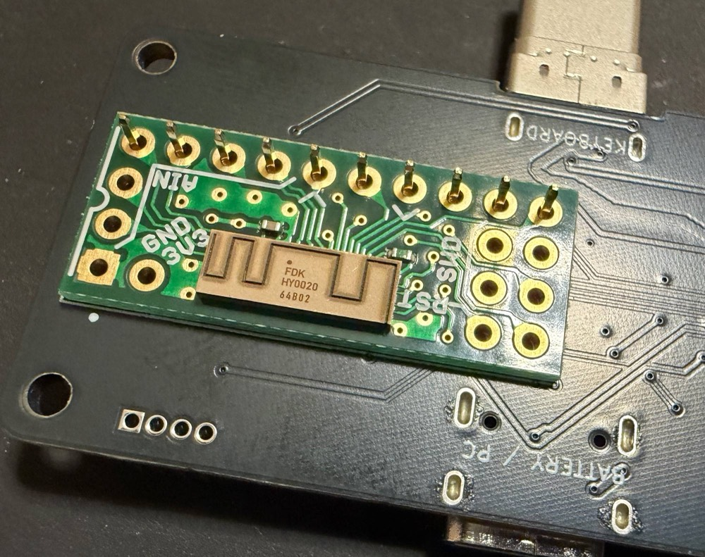
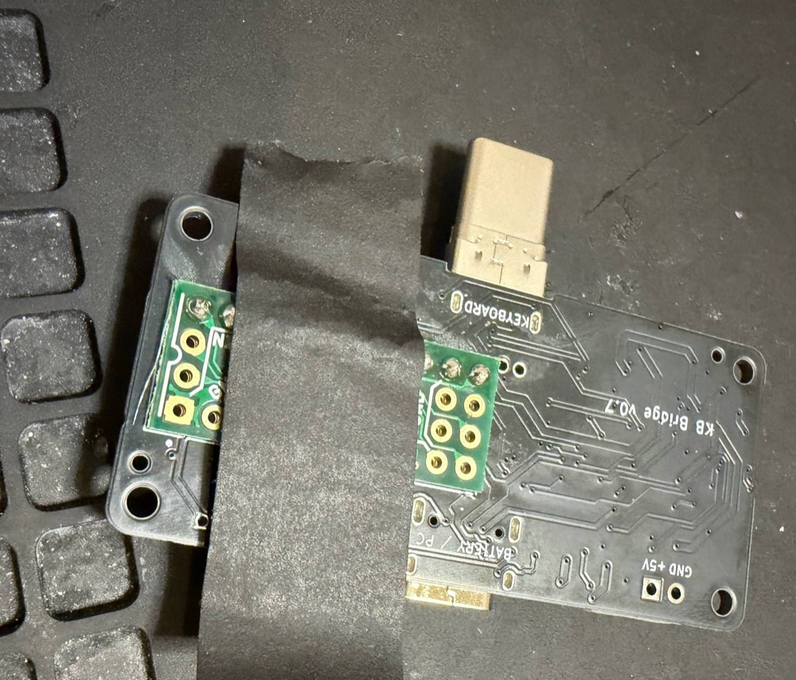
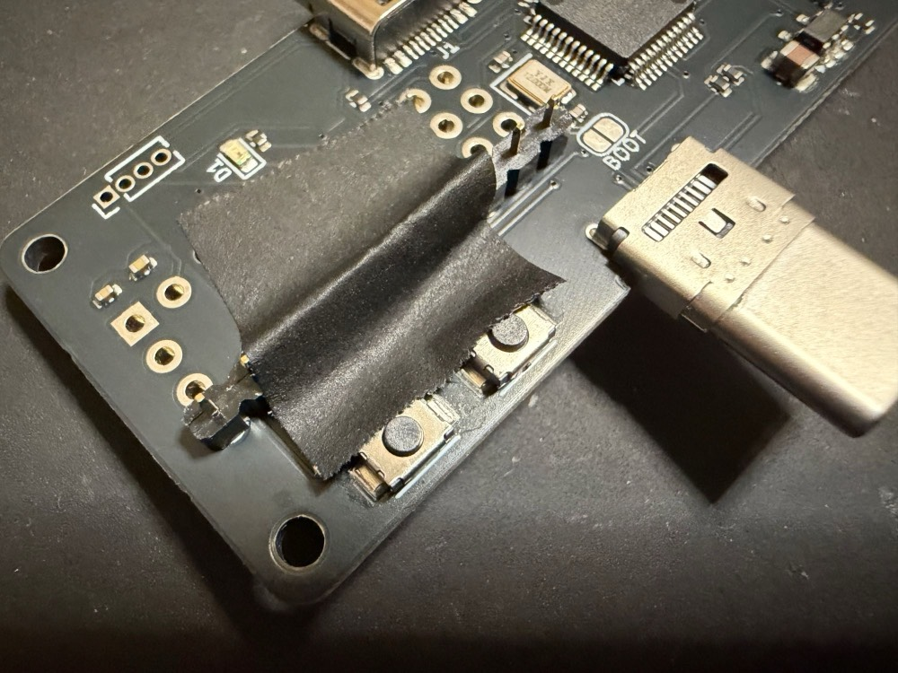
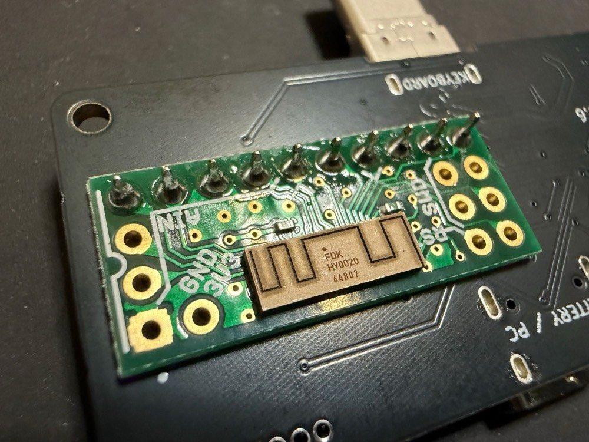
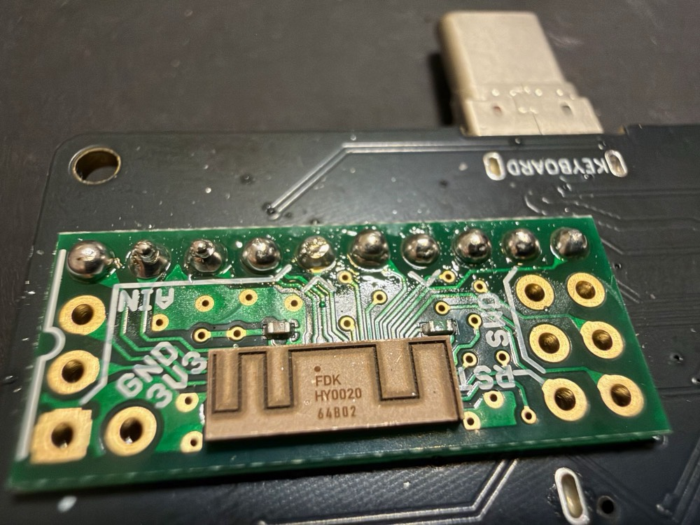
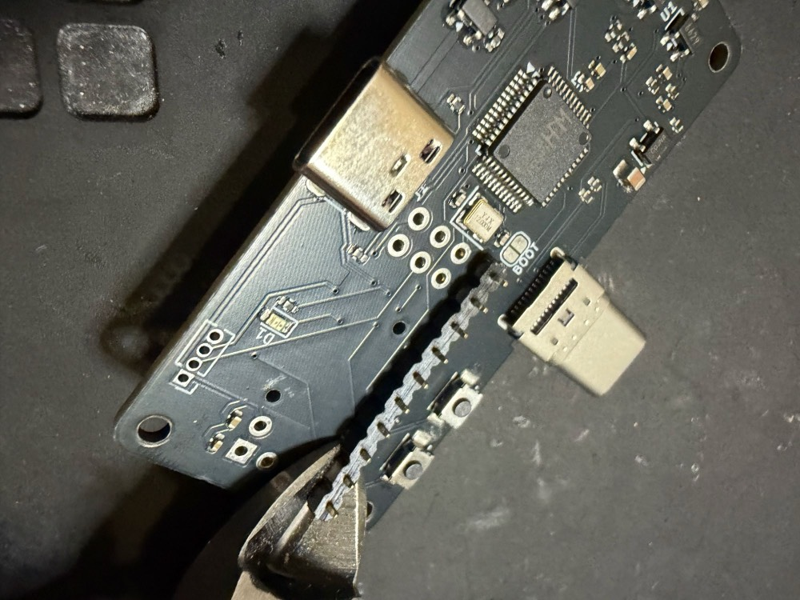
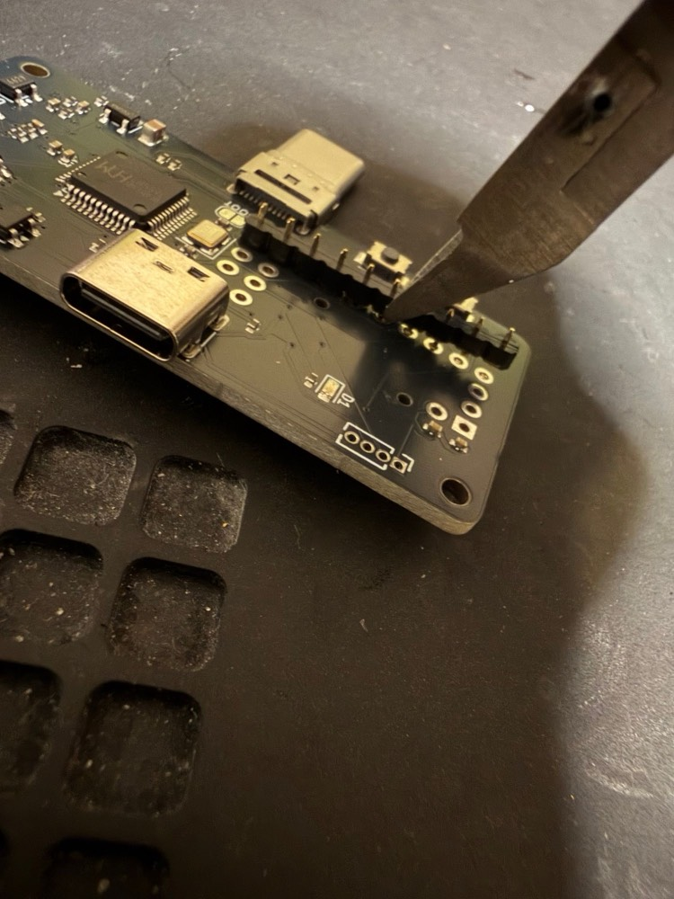
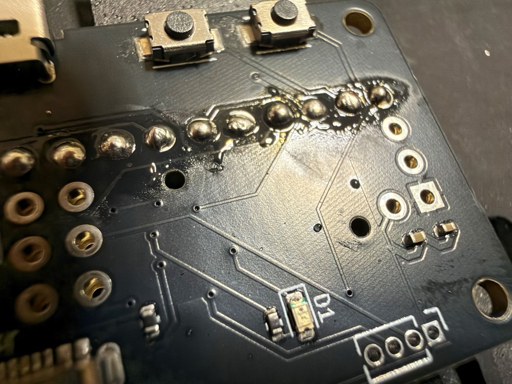
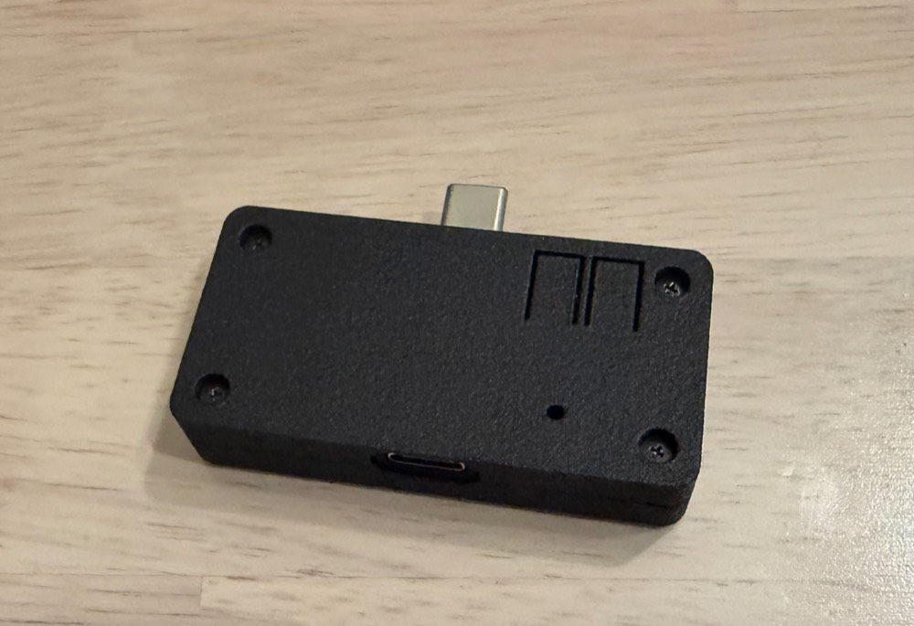
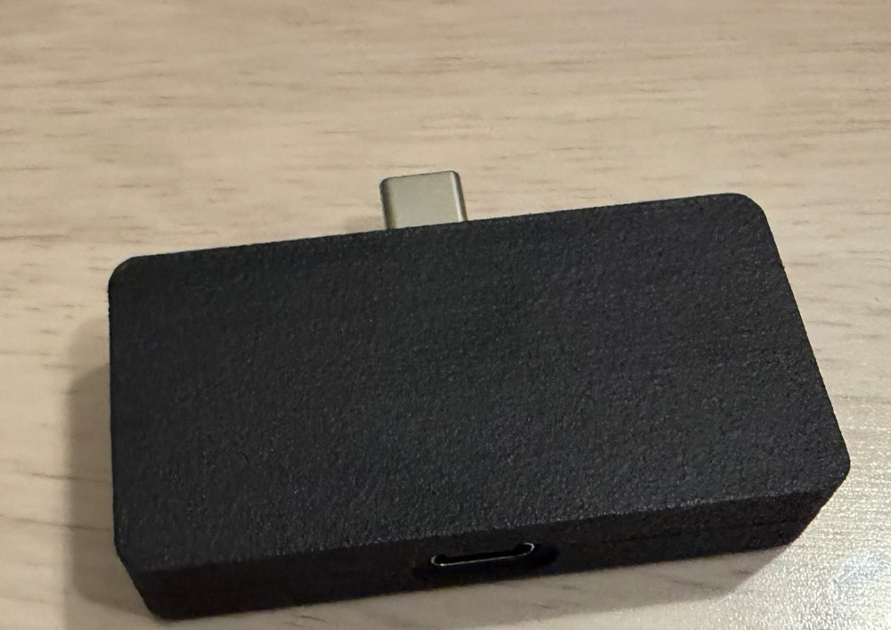

KB Bridge ビルドガイド
EnglishUSB-C で有線接続するキーボードを Bluetooth（BLE）キーボードにするアダプターです。HY0020（nRF52832 の BLE モジュール）のはんだ付け、ファームウェアの書き込み、ケースの組み立てまでの手順です。
1. 用意するもの
キット内容
| 部品 | 数 | メモ |
|---|---|---|
| KB Bridge 基板 | 1 枚 | HY0020 以外の部品は実装済み。USB チップ（CH559）のファームは手順 2 で書き込む |
| 細ピンヘッダー | 1 本 | AE-HY0020-DIP を基板に付けるのに使う |
| ケース（上・下） | 1 組 | 3D プリント。ヒートセットインサートは取り付け済み |
| M2 × 8 mm ネジ | 4 本 | ケースを上から留める |
必要な工具
はんだごて、はんだ、ニッパー、ジャンパー線（JP1 のショート用。ピンセットなどでも可）、マスキングテープ、USB-C ケーブル（データ通信対応）、パソコン（Chrome か Edge が動くもの）
ご自身で用意して頂くパーツ
| 部品 | 数 | メモ |
|---|---|---|
| AE-HY0020-DIP（秋月電子） | 1 個 | BLE モジュールの DIP 化キット。秋月電子で購入できます |
2. CH559 の書き込み
HY0020 をはんだ付けする前に、USB チップ（CH559）にファームウェアを書き込みます。CH559 の書き込みページで、パソコンの Chrome か Edge を使ってください。
- JP1（シルク「BOOT」）の 2 つの穴を、ジャンパー線の端などでショートしたまま、J1（USB-C の差し込み口）をパソコンにつなぎます。

- ページの「書き込む」を押し、一覧から WCH のデバイス（4348:55E0）を選んで「接続」します。
- 「完了」と出たら USB を抜き、JP1 のショートをやめます。
Windows では、最初の 1 回だけ Zadig で WinUSB ドライバーを入れる必要があります（CH559 の書き込みページに説明があります）。HY0020 がまだないので、書き込んでも LED は光りません。確かめるなら、PAIR を押しながらつないで、パソコンに「KB Bridge Update」（シリアルポート）が出れば OK です。
3. HY0020 のはんだ付け
向き: AE-HY0020-DIP は基板の裏面（部品の少ない面）に、すき間を空けずに直接重ねます。HY0020 のモジュール（金属のふたが付いた部分）を J1（USB-C の差し込み口、シルク「BATTERY / PC」）側に向け、裏面のシルクの枠に合わせてください。
- 細ピンヘッダーを部品面から KB Bridge 基板と AE-HY0020-DIP の両方に通します。プラスチックの部分は部品面に残ります。

- はんだ付けする面の反対側を、マスキングテープで固定します。裏面は AE-HY0020-DIP を、部品面は細ピンヘッダーのプラスチックを押さえます。


- 裏面（AE-HY0020-DIP 側）をはんだ付けします。はみ出たピンはニッパーで切り、はんだを整えます。


- 部品面のピンを、プラスチックごとニッパーで切ります。ケースに当たらないよう、突き出しは 2 mm 以下にします。


- 部品面もはんだ付けします。両面ともはんだ付けが必要です。

モジュールの上（裏面）は、ケースに入れると空の側を向きます。BLE の電波の通りを良くするための配置です。
4. ファームウェアの書き込み
ファームウェア書き込みページで書き込みます。パソコンの Chrome か Edge を使ってください。
- PAIR ボタンを押したまま、J1（USB-C の差し込み口）をパソコンにつなぎます。つないだらボタンは離してかまいません。
- ページの「書き込む」を押し、一覧から「KB Bridge Update」を選んで「接続」します。
- 「完了」と出たら USB を抜き、PAIR を押さずにつなぎ直します。
最初の起動で数秒、LED が赤と緑の交互に点滅することがあります。USB チップ（CH559）のファームを合わせて書き換えている合図なので、そのまま待ってください。以後の更新も同じ手順です。
5. 動作確認
- PAIR を押さずに J1 を USB 電源（パソコンかモバイルバッテリー）につなぎます。LED が 1 秒ごとに緑に短く光れば、接続待ちです。
- パソコンやスマートフォンの Bluetooth 設定で「KB Bridge」を選んでペアリングします。つながると LED が 2 秒間緑に光ります。
- キーボードを J2（USB-C のプラグ）に挿します。約 2 秒でキーボードが使えるようになります。
6. ケースの組み立て
- 基板を下ケースに置きます。J1 と J2 の位置を開口に合わせます。
- 上ケースをかぶせ、付属の M2 × 8 mm のネジ 4 本で留めます。締めすぎないでください。

使うときは、平らな面（下ケースの底）が上になります。PAIR と LOW-I は、ケースに入れたまま上から押せます。

7. 使い方
ボタン
PAIR と LOW-I は、ケースに入れたまま上から押せます。位置は下の図のとおりです。
| ボタン | 操作 | 動作 |
|---|---|---|
| PAIR | 短く押す | 接続待ちを始める（別の機器とつなぐとき） |
| PAIR | 3 秒押す | ペアリング情報をすべて消す（LED 赤 3 回） |
| PAIR | 押しながら USB をつなぐ | ファームウェアの書き込みモード |
| LOW-I | 押す | 自動オフ対策を 弱 → 強 → なし の順に切り替え（設定は保存される。初期値は弱） |
モバイルバッテリーの自動オフ対策（LOW-I）
KB Bridge は待機中の電流がとても小さいので、モバイルバッテリーが「使われていない」と判断して電源を切ることがあります。自動オフ対策は、定期的に短く電流を流して、それを防ぎます。
| 設定 | LED | 内容 |
|---|---|---|
| 弱（初期値） | 緑 2 回 | 10 秒ごとに 50 ms。平均 約 0.75 mA。まずはこれで |
| 強 | 緑 3 回 | 5 秒ごとに 200 ms。平均 約 6 mA。弱で切れるバッテリー向け |
| なし | 赤 2 回 | パソコンや、自動オフのない電源で使うとき |
LED
| 表示 | 意味 |
|---|---|
| 1 秒ごとに緑 | 接続待ち |
| 緑 2 秒 | つながった |
| 2 秒ごとに赤 | つながっているが、キーボードがない |
| 赤と緑の交互 | USB チップのファームを更新中 |
| 赤の速い点滅 | USB チップの異常（ファームを書き直す） |
| 5 秒ごとに赤 1 回 | 電源の電圧が低い（4.5 V 未満） |
消費電流（参考）
キーボードの電源も KB Bridge から出すので、電池の持ちはほとんどキーボード次第です。一般的な有線キーボードは無線キーボードのような省電力設計ではないため、通常の無線キーボードより電池の減りが早くなります。下は 5 V の USB 電流チェッカーで測った例です。
| 状態 | 電流 |
|---|---|
| KB Bridge 単体（キーボードなし、自動オフ対策なし） | チェッカーの表示は 0.00 A（1 mA 未満） |
| キーボードをつないで打っているとき | 約 11 mA（使用するキーボードで変わります） |
| 自動オフ対策「弱」 | 平均 約 0.75 mA 増える |
| 自動オフ対策「強」 | 平均 約 6 mA 増える |
RGB などで光るキーボードは、これよりずっと多く流れます。入力がないとキーボードは 2 分で USB サスペンドになり、省電力に対応したキーボード（QMK の rgb_matrix.sleep など）なら、その間の電流が大きく下がります。
自動の電源オフ
10 分間どの機器ともつながらないと、KB Bridge は電源オフ（LED も消えます）になり、つないでいるキーボードの電源も切れます。LOW-I を押すか、キーボードを抜き挿しすると起動して、接続待ちに戻ります（起こすために押した LOW-I では、自動オフ対策の設定は変わりません）。PAIR では起動しません。
モバイルバッテリーで使っている場合、電源オフ中は自動オフ対策も止まるので、バッテリー側の電源も切れることがあります。そのときはバッテリー側を入れ直してください。
制限
- 同時につながるのは 1 台の機器だけです。接続先を切り替えるボタンはないため、別の機器で使うときは、いまつながっている機器の Bluetooth を切ってください。
- キーボードは 1 台を J2 に直接つなぎます。USB ハブを挟む使い方はできません。
- 同時押しは 6 キーまでです（キーボードが NKRO でも、Bluetooth では 6KRO で送ります）。
- 動作を確認した接続先は iPhone、macOS、Ubuntu です。Windows と Android は確認していません。
- キーの入れ替え（キー変換）機能はありません。キーマップはキーボード側（Vial など）で変更してください。
Vial
Vial 対応のキーボードなら、Bluetooth でつないだまま Vial でキーマップを変更できます。キーの入れ替えなどは KB Bridge ではなく、キーボード側（Vial）で設定します。
ただし Bluetooth 経由では反応が遅いので、Vial で設定するときは、キーボードを USB ケーブルでパソコンに直接つなぐのがおすすめです。
8. 困ったとき
| 症状 | 対処 |
|---|---|
| LED がまったく光らない | HY0020 のはんだ付けを確かめてから、ファームウェア書き込みページでファームウェアを書き直す |
| 「KB Bridge」が Bluetooth の一覧に出ない | PAIR を短く押して接続待ちにする。前につないだ機器にまだ登録されている場合は、その機器の Bluetooth 設定から KB Bridge を削除する |
| つながらない、すぐ切れる | PAIR を 3 秒押してペアリング情報を消し、接続先の機器からも KB Bridge を削除して、ペアリングし直す |
| モバイルバッテリーの電源が切れる | LOW-I を押して「強」（緑 3 回）にする |
| Linux（Ubuntu など）で、しばらく放置すると打てなくなる。Bluetooth を切ってつなぎ直すと直る | パソコン側の Bluetooth アダプターの省電力（USB autosuspend）が原因です。cat /sys/module/btusb/parameters/enable_autosuspend が Y なら、echo 'options btusb enable_autosuspend=0' | sudo tee /etc/modprobe.d/btusb.conf を実行してパソコンを再起動します（N になれば完了） |
| 書き込みが途中で止まる、エラーになる | 抜いて、PAIR を押したままつなぎ直し、もう一度書き込みます。途中で止まっても、書き直せば元に戻ります。何回か試してもうまくいかないときは、GitHub のリポジトリを clone して、手元で書き込んでください（README の「Local testing」に手順があります） |
| ファームウェア書き込みページで KB Bridge Update が出ない | CH559 が書き込まれていない可能性があります。2. CH559 の書き込みをやり直してください（HY0020 を付けたあとでもできます）。それでも出なければ、PAIR を押したままつないでいるか、ケーブルがデータ通信に対応しているかを確かめる |
9. ケースを自作する
付属のケースを使わず、自分でケースを作ることもできます。基板の 3D データと寸法図を用意しています。
- kb_bridge_v0.7_pcba.stl（HY0020 を付けた状態の基板。単位は mm。原点は基板の中心、+Y が J1 側、Z = 0 が基板の下面）
- kb_bridge_v0.7_dimensions.pdf（外形、取り付け穴、コネクター、ボタン、LED、高さの寸法図）
押さえておく寸法
| 項目 | 寸法（mm） |
|---|---|
| 基板 | 56.0 × 26.0 × 1.6、角 R2.0 |
| 取り付け穴 | φ2.2（M2）× 4、中心から (±25.5, ±10.5) |
| J1（電源・パソコン） | USB-C の差し込み口。基板の端から 1.3 出る。高さは基板の下面から 4.85 まで |
| J2（キーボード） | USB-C のプラグ。基板の端から 11.75 出る |
| 部品面の高さ | J1 を除くとボタンがいちばん高く、下面から 3.54。ボタンは部品面側から押す |
| 裏面 | HY0020 が下面から 2.14 下まで出る。2.9 まで空けておく |
5V / GND ピンからの給電
J1 の近くにある 2 つの穴（シルク「+5V」「GND」、2.54 mm 間隔）からも電源を入れられます。ケースの中に電池や電源基板を入れる場合に使えます。
- 電圧は 4.5〜5.5 V 程度が目安です。J1 と同じ入力につながっていて、逆につないでも壊れない保護が入っています。
- ここからの給電は動作を保証していません。使う電源で動くか、実物で確かめてから使ってください。
- J1 とこのピンに、同時に別の電源をつながないでください。
ケースを作るときの注意
- LED（部品面、中心から (−14.0, 8.0)）の光が見える穴を空けてください。
- HY0020 のモジュール（裏面、J1 側）の近くには金属を置かないでください。Bluetooth の電波が弱くなります。
- PAIR と LOW-I のボタンを押せるようにしてください。
10. ソースコード
ファームウェアと、2 つの書き込みページのソースコードは GitHub（darakuneko/kb_bridge）で公開しています（MIT ライセンス）。困ったことや、やりたいことがあれば、自由に変更して使ってください。いい機能ができたら、ぜひプルリクエストをください。